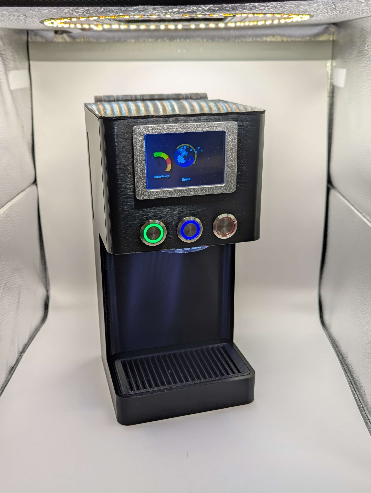
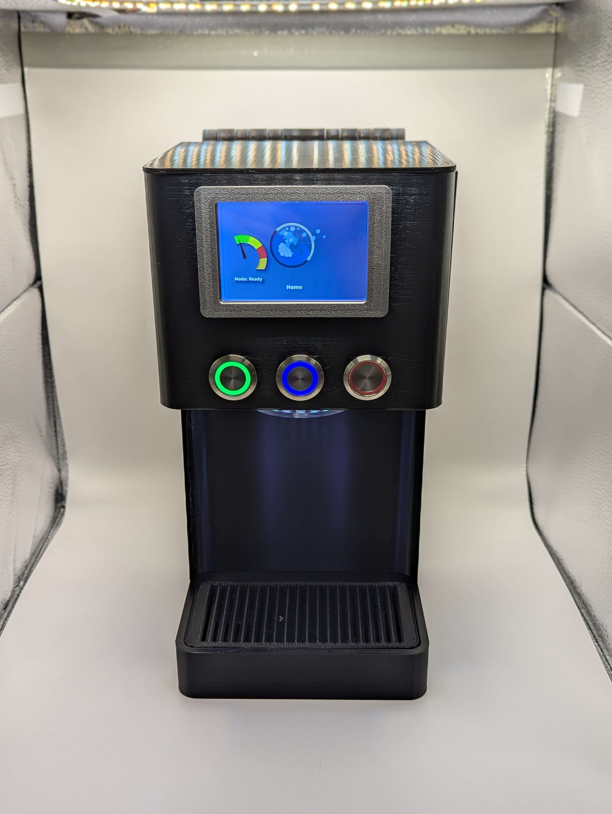
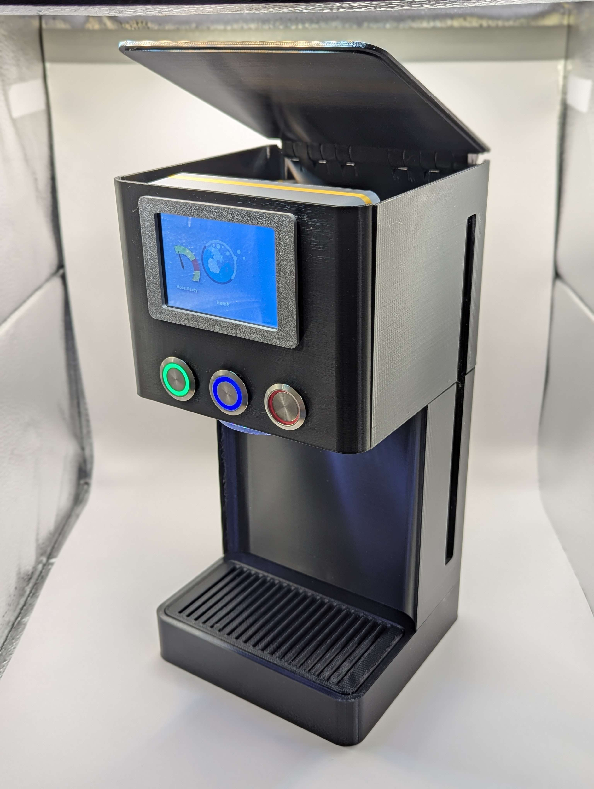
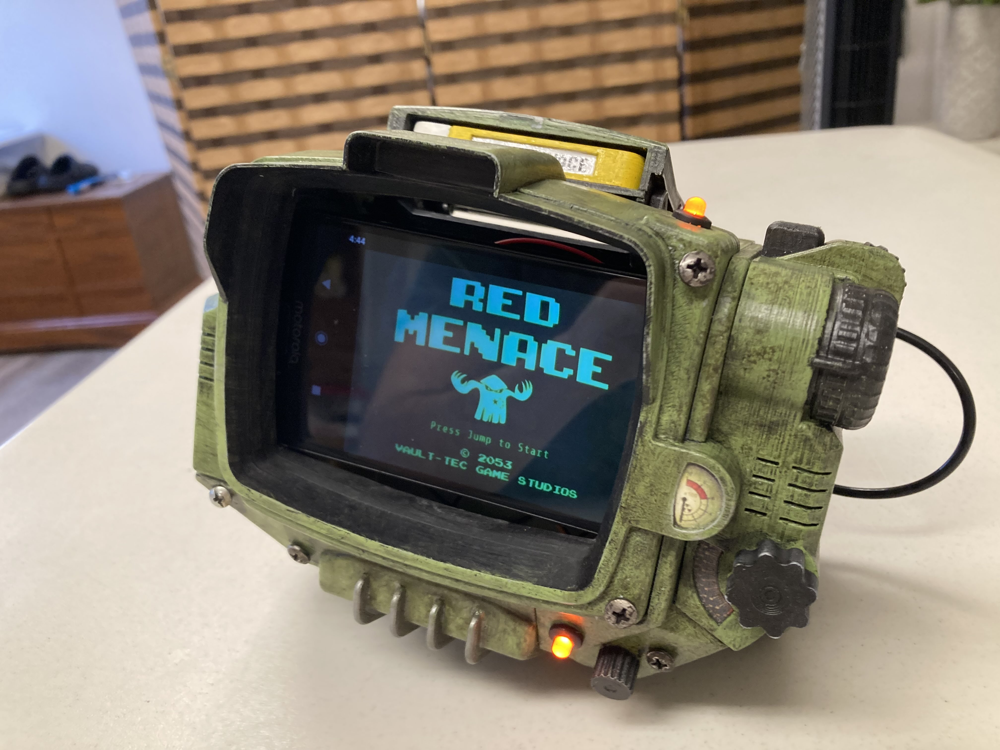

Software Projects
These are tools, experiments, or applications I've developed for fun, school, or clients.
ST Dispenser



This project is a display model of a high tech soap dispenser, built from scratch I integrated buttons to control the screen display, and LED lights to give the display model the finishing touch that shows off the product well.
Pathfinder Cantrip Cards

This project lives on itch.io but it is a tool I developed which
selects randomly from cantrip spells in Pathfinder 2nd edition. This was built as a tool for the Dungeon Master running the game, randomly selecting 10-16 items
from a small list can be tedious, let alone a list of 120 spells. So far this tool has saved much time for the players which have chosen to open up the custom item
called "cantrip booster packs." Our group has a heavy overlap of people who play Magic the Gathering, and the Dengeon Master thought it would be a fun addition to
include booster packs into our Pathfinder game.
3D Prints
These are some of my 3D printed items which I hand painted.
Pip-Boy 3000 Mark IV



Pip-Boy replica printed in PLA and hand-painted with weathered detail.
The files I used for this print were sourced from here,
credit for the files goes to this tallented creator, I simply printed and constructed the props featured here.
Seal of Akatosh

The Seal of Akatosh, otherwise known as the Skyrim logo, this was one of my earlier prints, simply a decorative piece.
Squidward's House - Dice Tower


Squidward's house is an iconic image from Spongebob, and when I found the dice tower file, I knew I had to print it.
Warhammer Miniatures


These models are my first foray into printing and painting miniatures. I hope to hone and refine my ability to print detailed models.
Bocchi the Rock

This is a simple fun print inspired by the show Bocchi the Rock.
Miniature Painting
I enjoy painting tabletop miniatures, here are some of my models.
Mini Mech


I built and painted this model from a small mech model kit.
Issac Fableton

Issac Fableton is a character that I am currently playing in my dungeons and dragons game, the model was printed in resin giving an extreme level of detail.
Swamp Monster


This Swamp monster is from an official Dungeons and Dragons model set.
Mech Soldier


This is a non-descript mech soldier, I'm unsure on the origin of the model, this was one of my first minis I have ever painted.
Ogre

This Ogre is another of my early painted models.
Other Art
I also have a passion for 2d works of art, here are a few of my other art pieces.
Laser Engraving

This is a birthday gift I made for a close friend.
Digital Playmat


This is a digital painting I painted to pair with a particular Magic the Gathering deck that I built. The commander is featured front and center, and everything else is a reference to important cards in the deck.